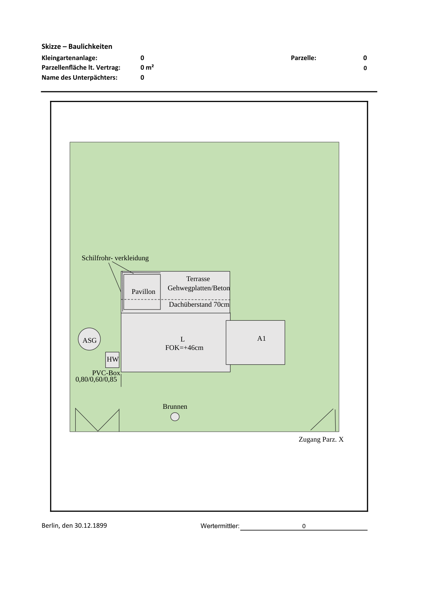
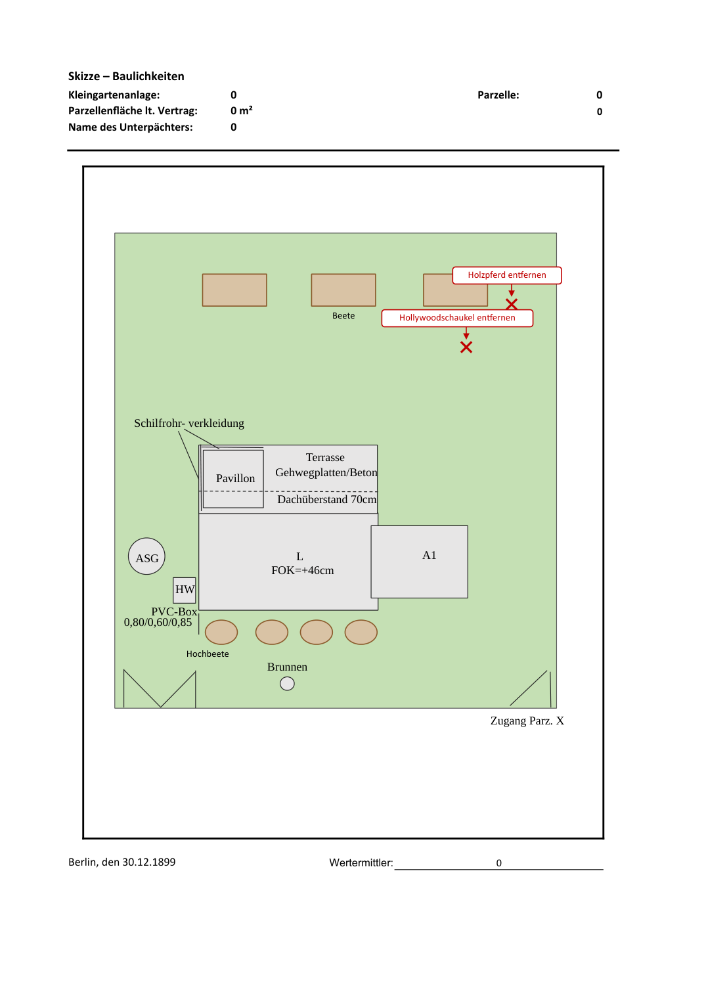
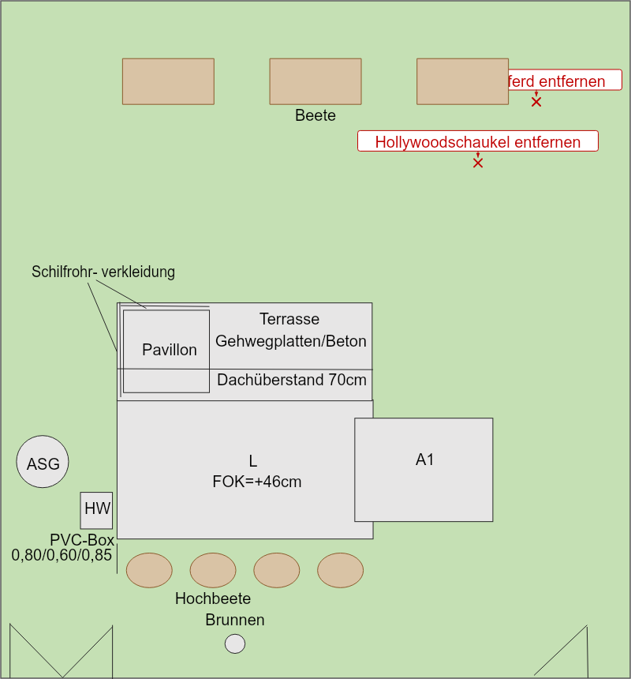
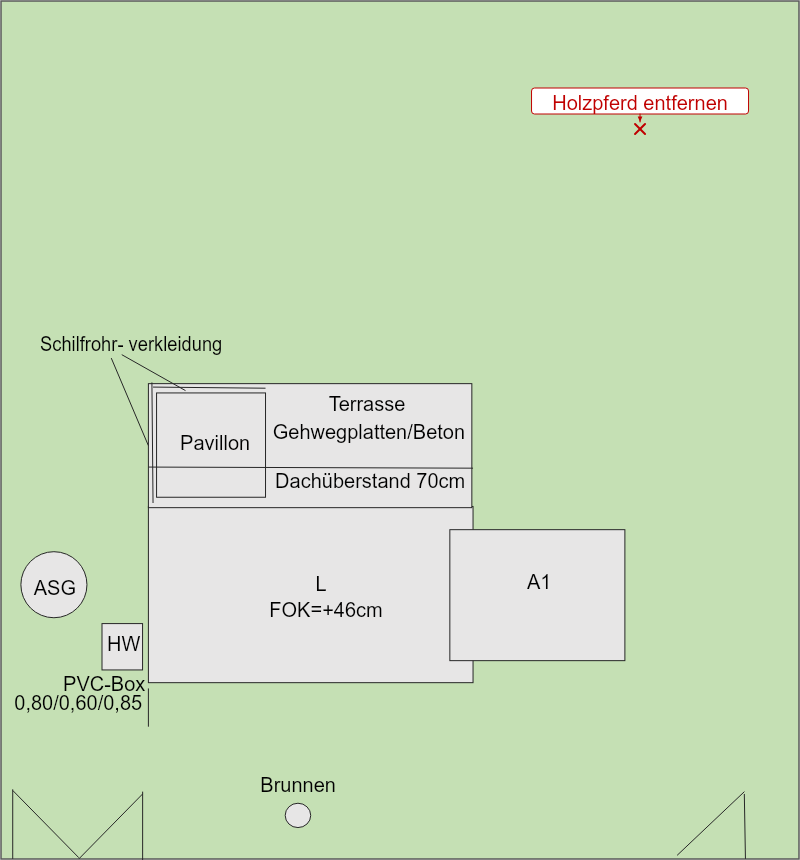
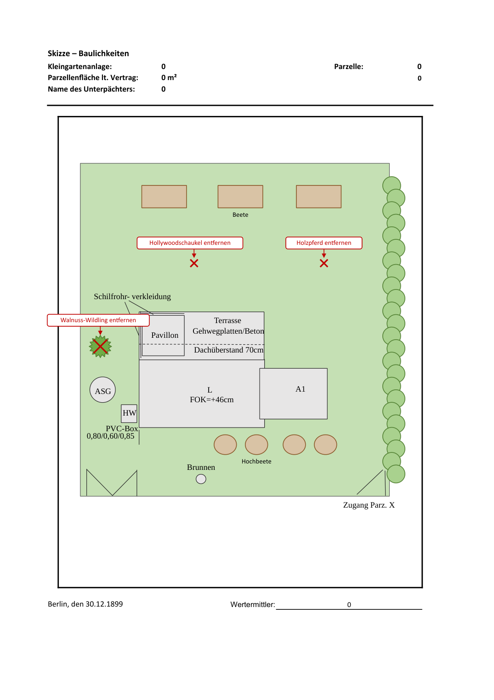
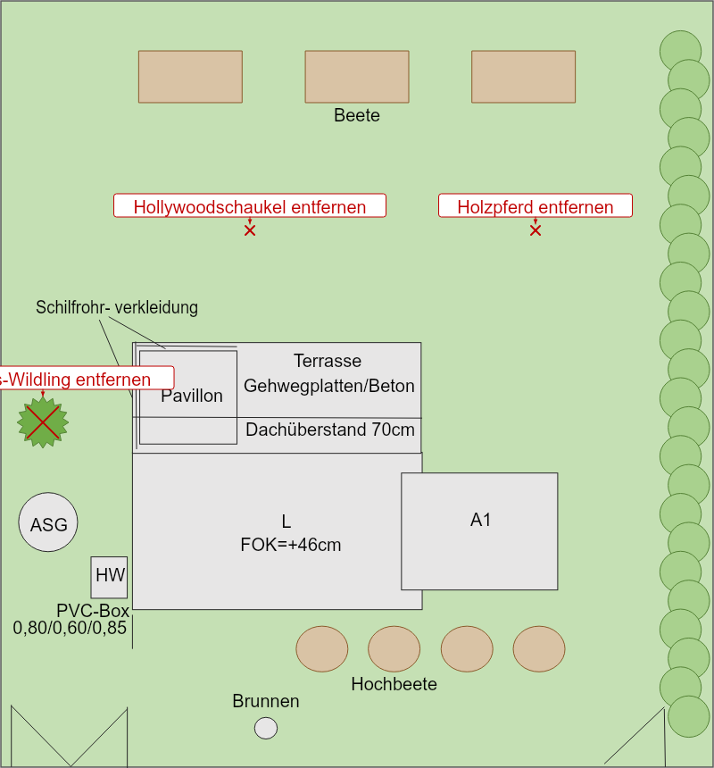

Sätze aus chat.txt (6), Ausgangslage: nur feste Bau-Formen. Noch keine Vergleichszahlen
(claude-ergebnis.json fehlt) – nur Bilder und Protokoll.



| Satz | Was geändert wurde | Modell / Prüfung | Zeit |
|---|---|---|---|
| Oben rechts steht ein Holzpferd, das muss entfernt werden. |
| gemini-3.7-flash → gemini-3.7-flash Die Markierung zur Entfernung des Holzpferds oben rechts ist korrekt platziert. | 165.7 s |
| Links neben das Holzpferd eine Hollywoodschaukel, entfernen. |
| gemini-3.7-flash Prüfung nicht möglich: Die KI ist gerade ausgelastet. Bitte gleich noch einmal versuchen. | 189.5 s |
| Oben drei Beete nebeneinander. |
| gemini-3.7-flash → gemini-3.7-flash 1 Korrektur(en) | 93.2 s |
| Rechts eine Hecke am Zaun entlang. |
| 135.5 s | |
| Walnuss-Wildling links neben ASG entfernen. |
| 127.7 s | |
| Unter der Laube vier Hochbeete nebeneinander, beschriftet mit Hochbeete. |
| gemini-3.7-flash Prüfung nicht möglich: Die KI ist gerade ausgelastet. Bitte gleich noch einmal versuchen. | 345.1 s |

| Satz | Was geändert wurde | Modell / Prüfung | Zeit |
|---|---|---|---|
| Oben rechts steht ein Holzpferd, das muss entfernt werden. |
| gemini-3.8-flash → gemini-3.8-flash Das zu entfernende Holzpferd ist oben rechts korrekt platziert. | 82.7 s |
| Links neben das Holzpferd eine Hollywoodschaukel, entfernen. |
| 147.8 s | |
| Oben drei Beete nebeneinander. |
| 147.5 s | |
| Rechts eine Hecke am Zaun entlang. |
| 163.0 s | |
| Walnuss-Wildling links neben ASG entfernen. |
| 147.6 s | |
| Unter der Laube vier Hochbeete nebeneinander, beschriftet mit Hochbeete. |
| 147.6 s |


| Satz | Was geändert wurde | Modell / Prüfung | Zeit |
|---|---|---|---|
| Oben rechts steht ein Holzpferd, das muss entfernt werden. |
| gemini-3-flash-preview → gemini-3-flash-preview Das zu entfernende Holzpferd wurde oben rechts korrekt markiert. | 9.9 s |
| Links neben das Holzpferd eine Hollywoodschaukel, entfernen. |
| gemini-3-flash-preview → gemini-3-flash-preview 1 Korrektur(en) | 9.6 s |
| Oben drei Beete nebeneinander. |
| gemini-3-flash-preview → gemini-3-flash-preview 2 Korrektur(en) | 13.1 s |
| Rechts eine Hecke am Zaun entlang. |
| gemini-3-flash-preview → gemini-3-flash-preview 2 Korrektur(en) | 30.7 s |
| Walnuss-Wildling links neben ASG entfernen. |
| gemini-3-flash-preview → gemini-3-flash-preview 1 Korrektur(en) | 23.5 s |
| Unter der Laube vier Hochbeete nebeneinander, beschriftet mit Hochbeete. |
| gemini-3-flash-preview → gemini-3-flash-preview 5 Korrektur(en) | 24.5 s |